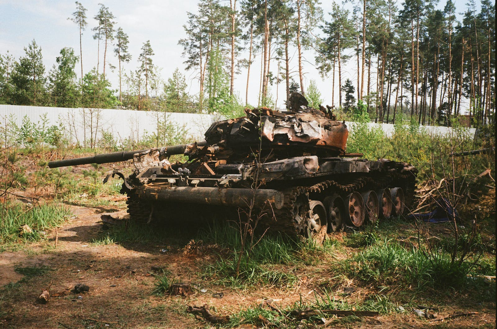

The Russo-Ukrainian War, also known as the Russia–Ukraine War, has been ongoing between Russia (alongside Russian separatists in Ukraine) and Ukraine since February 2014.[e] Following Ukraine's Revolution of Dignity, Russia annexed Crimea from Ukraine and supported pro-Russian separatists in the war in Donbas against Ukrainian government forces; fighting for the first eight years of the conflict also included naval incidents, cyberwarfare, and heightened political tensions. Throughout 2021, bilateral tensions rose due to a Russian military buildup near the border with Ukraine, and on 24 February 2022, the conflict saw a major escalation as Russia launched a full-scale invasion of Ukraine.
On 20 February 2014, Russia began an annexation of Crimea. On 22 and 23 February, Russian troops and special forces began moving into Crimea through Novorossiysk. On 27 February, Russian forces without insignias began their advance into the Crimean Peninsula. They took strategic positions and captured the Crimean Parliament, raising a Russian flag. Security checkpoints isolated the Crimean Peninsula from the rest of Ukraine and restricted movement within the territory.
The 2022 Russian invasion of Ukraine began on the morning of 24 February, when Putin announced a "special military operation" to "demilitarise and denazify" Ukraine. Minutes later, missiles and airstrikes hit across Ukraine, including Kyiv, shortly followed by a large ground invasion along multiple fronts. Zelenskyy declared martial law and a general mobilisation of all male Ukrainian citizens between 18 and 60, who were banned from leaving the country.
Thanks to the resistance of the Ukrainian army and self-defense forces, already in the first days of the aggression, the Russian army suffered significant losses in manpower and equipment. In its recent history, according to the estimates of Ukrainian and international experts, Russia has not suffered even approximately such large losses in such a short time in any war. According to Western intelligence, Russia encountered stronger resistance than expected, which led to logistical and technical problems for its troops, lack of fuel, ammunition and food, undermining the fighting spirit of the attackers. The rapid unification of the countries of the world to help Ukraine, as well as the introduction of powerful sanctions against Russia, became an unexpected blow to the aggressor country.
In the Zaporizhzhia region, residents of cities temporarily occupied by Russian troops, as in previous days, continued to gather for protests against the invaders. Finally, the evacuation of part of the population of the besieged Mariupol began, but the humanitarian convoy (cargo) could not be delivered to the city. Ukraine agreed with the Russian Federation on 10 humanitarian corridors (with Mariupol) on March 14, of which only 7 worked (without the Brovary direction). Shelling of Kharkiv and Kyiv by Russian troops continued. Debris of their downed rocket fell on the road in Kurenivka. Shortly after the electricity supply was restored to the Chernobyl nuclear power plant, the occupiers cut it off again. According to the report of the Main Directorate of Intelligence, Russian troops began to purposefully destroy Ukrainian agricultural machinery.
Pro-Ukrainian protests took place in several Russian embassies abroad, including in Armenia, Australia, Azerbaijan, Bulgaria, Belgium, Canada, Estonia, Georgia, Germany, Hungary, Iceland, Ireland, Italy, Japan, Kazakhstan, Moldova, the Netherlands, Norway, Portugal, Romania, Slovakia, Spain, Sweden, Taiwan, Turkey, Great Britain and the USA. In the Czech Republic, about three thousand people protested against Russia on Wenceslas Square in Prague.
On March 15, the first refugees from the besieged Mariupol reached Zaporozhye. Ukrainian soldiers successfully repelled the attacks of the invaders. The Kherson region was completely under occupation. Most of the districts were without electricity, gas and water, and in some districts the supply of food was stopped.